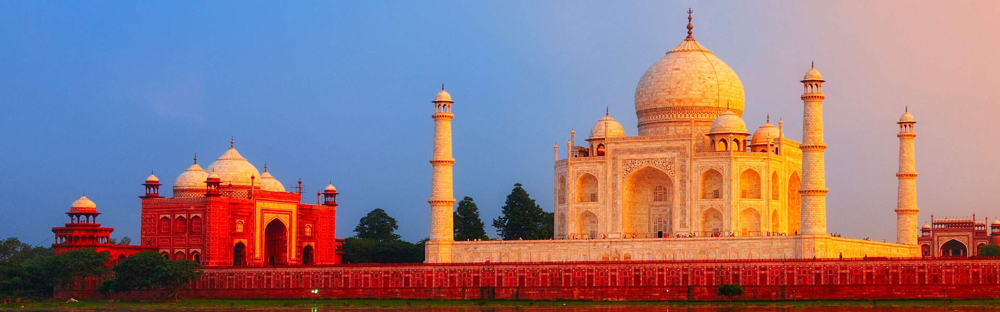
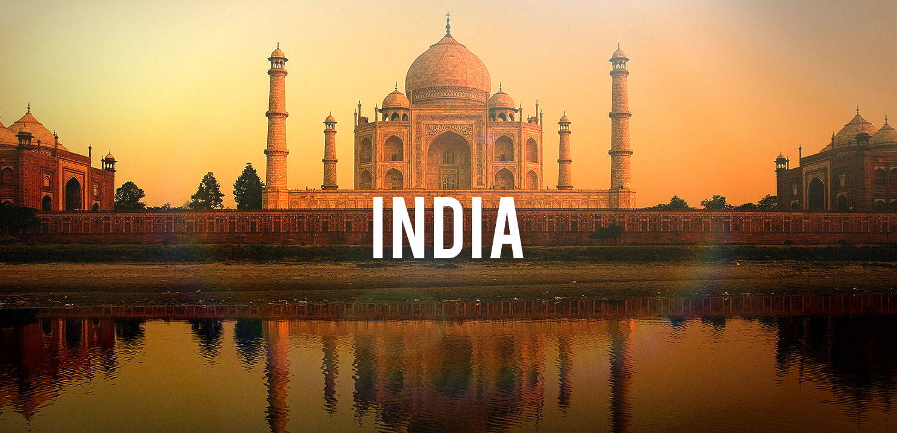

Индия страната на чудесата.
Индия, официално Република Индия (на хинди: भारत गणराज्य, на английски: Republic of India), е държава в Южна Азия. Разположена е на полуостров Индустан, на юг от Хималаите, на изток от Арабско море, на запад от Бенгалския залив и на север от Индийския океан. Граничи с държавите Пакистан, Китайска народна република, Непал, Бутан, Бангладеш и Мианмар (Бирма) и има обща дължина на бреговата линия от 7517 km.[3] Разделена е на 29 щата и 7 съюзни територии, а столица на самата държава е Делхи. Индия е седмата по големина страна в света и втора по население.
Индийската история
Тук в дълбока древност се зараждат редица цивилизации, най-вече по долината на река Инд, които впоследствие развиват търговия и обогатяват културното наследство на човечеството в продължение на векове.[4] В Индия се зараждат четири от най-изповядваните религии – значимите в световен мащаб будизъм и индуизъм, както и важните в регионален план сикхизъм и джайнизъм. Индийската култура се обогатява и с пристигането на зороастризма, християнството, юдаизма и исляма към 1000 година сл. Хр. Между X и XII век в индийския субконтинент е създадена силната Моголска империя. Макар и съставена от трибутарни кралства, управлявани от махараджи, раджи, такури и набоби, империята притежава голяма икономическа сила и произвежда една четвърт от световното производство до към XVIII век. След това става британска колония, изцяло под контрола на Британската източноиндийска компания. През 1947 година страната успява по мирен път да постигне своята независимост.[5]
ОЩЕ .........
География и местоположение
Тук в дълбока древност се зараждат редица цивилизации, най-вече по долината на река Инд, които впоследствие развиват търговия и обогатяват културното наследство на човечеството в продължение на векове.[4] В Индия се зараждат четири от най-изповядваните религии – значимите в световен мащаб будизъм и индуизъм, както и важните в регионален план сикхизъм и джайнизъм. Индийската култура се обогатява и с пристигането на зороастризма, християнството, юдаизма и исляма към 1000 година сл. Хр. Между X и XII век в индийския субконтинент е създадена силната Моголска империя. Макар и съставена от трибутарни кралства, управлявани от махараджи, раджи, такури и набоби, империята притежава голяма икономическа сила и произвежда една четвърт от световното производство до към XVIII век. След това става британска колония, изцяло под контрола на Британската източноиндийска компания. През 1947 година страната успява по мирен път да постигне своята независимост.[5]
ОЩЕ .........
Население
Тук в дълбока древност се зараждат редица цивилизации, най-вече по долината на река Инд, които впоследствие развиват търговия и обогатяват културното наследство на човечеството в продължение на векове.[4] В Индия се зараждат четири от най-изповядваните религии – значимите в световен мащаб будизъм и индуизъм, както и важните в регионален план сикхизъм и джайнизъм. Индийската култура се обогатява и с пристигането на зороастризма, християнството, юдаизма и исляма към 1000 година сл. Хр. Между X и XII век в индийския субконтинент е създадена силната Моголска империя. Макар и съставена от трибутарни кралства, управлявани от махараджи, раджи, такури и набоби, империята притежава голяма икономическа сила и произвежда една четвърт от световното производство до към XVIII век. След това става британска колония, изцяло под контрола на Британската източноиндийска компания. През 1947 година страната успява по мирен път да постигне своята независимост.[5]
ОЩЕ .........